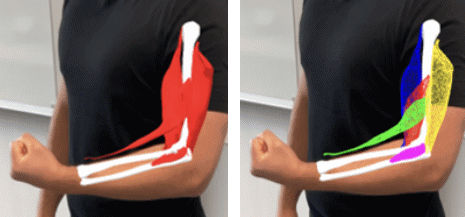

PerSiVal: On-Body AR Visualization of Biomechanical Arm Simulations


Venue. CG&A (2024)
Abstract. In this work, we explore different combinations of techniques for an interactive, on-body visualization in augmented reality (AR) of an upper arm muscle simulation model. In terms of data, we focus on a continuum-mechanical simulation model involving five different muscles of the human upper arm, with physiologically realistic geometry. In terms of use cases, we focus on the immersive illustration, education, and dissemination of such simulation models. We describe the process of developing six on-body visualization prototypes over a period of five years. For each prototype, we employed different types of motion capture, AR display technologies, and visual encoding approaches, and gathered feedback throughout outreach activities. We reflect on the development of the individual prototypes and summarize lessons learned of our exploration process into the design space of situated on-body visualization.
Link to this page: